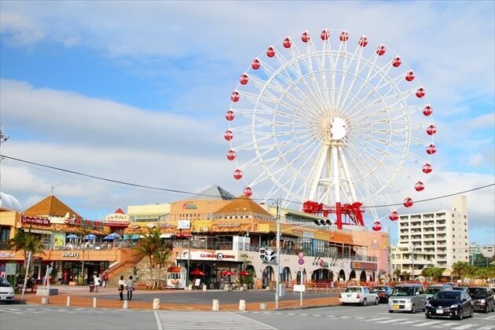
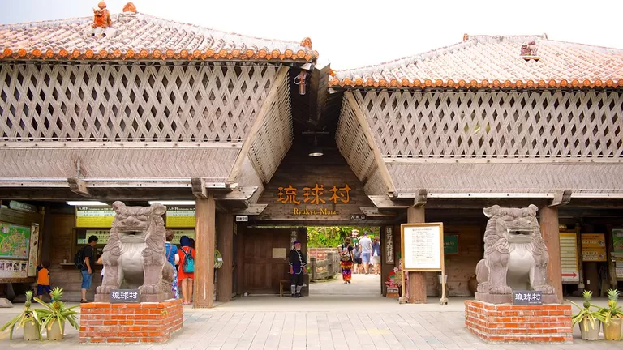
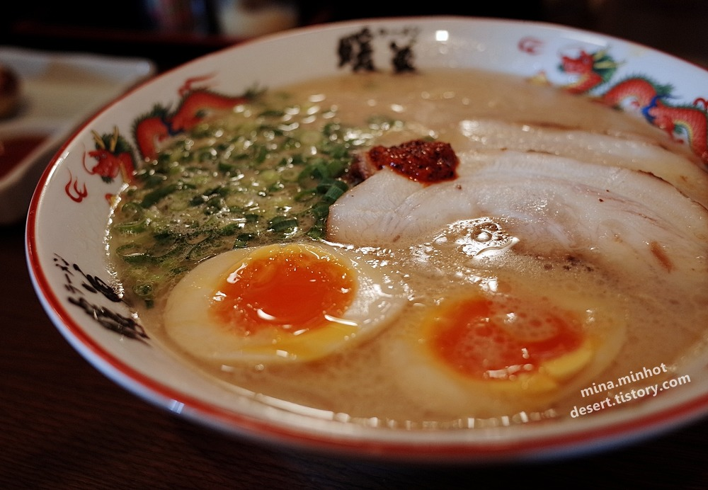
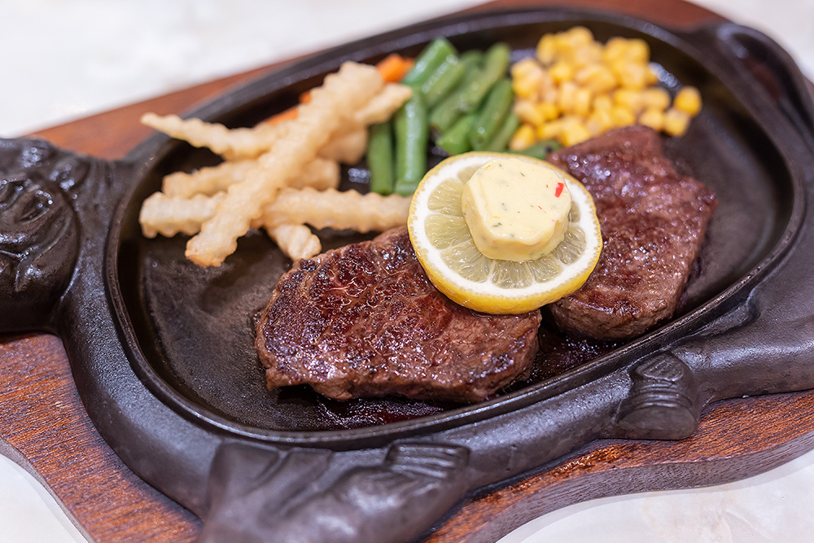
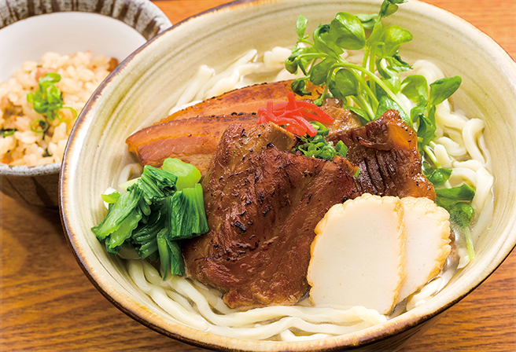

관광지
1. 아메리칸 빌리지

아메리칸 빌리지(AMERICAN VILLAGE)는 오키나와의 오다이바라고 불리는 자탄초(北谷町)의
미하마(美浜) 지역에 위치한 복합 타운이다. 정식 명칭은 미하마 타운 리조트 아메리칸 빌리지다.
1981년에 반환된 미군 비행장 부지에 계획적으로 조성된 시티 리조트로, 미국 샌디에고의 시포트 빌리지를 모델로 하고 있다.
아메리칸 빌리지는 1500대의 차량을 주차할 수 있는 대형 주차장을 갖추고 있으며 광대한 부지에 들어선 여러 빌딩들에는
대형 마트와 수입 잡화점, 패션숍, 레스토랑, 영화관, 클럽 등이 입점해 있어 쇼핑은 물론이고 다양한 어뮤즈먼트를 즐길 수 있다.
대관람차가 있는 카니발 파크 미하마에 있는 트릭아트 뮤지엄인 아쿠아 판다 트릭트립에서는 3D 스트리트 아트를 선보이며,
8개의 영화관이 있는 미하마 7플렉스와 본격적인 오키나와 음악을 즐길 수 있는 오키나완 뮤직 카라하이를 비롯해 가라오케,
볼링장, 게임센터 등 다양한 오락 시설이 방문객을 맞는다.
2. 류큐무라

류큐무라(琉球村)는 ‘계승하고 싶은 옛날의 오키나와’를 테마로, 약 100년 전 류큐 왕국 시대의 민가를
한자리에 모아놓은 민속촌이다. 오키나와 열도 각지에 흩어져 있던 민가를 이축해 조성한 곳으로 류큐 왕국 시대 서민의 생활을 짐작
해볼 수 있다. 이축해 온 민가는 총 7채로, 민가를 자세히 살펴보면 일본 전통 가옥이라기보다 중국 건축양식에 가깝다. 타이완과 일본
사이에 위치한 오키나와는 지리적으로 타이완에 더 가깝기 때문에 중국 문화의 영향을 더 많이 받았을 것이다.
재미있는 사실은 집집마다 원래의 집주인 이름을 적은 푯말을 달아놓은 것이다. 지금도 마치 사람이 사는 집처럼 관리인이
기모노나 유카타를 입고 집을 지키고 있으며, 관광객에게 집의 특징을 자세히 설명해준다. 민가에서 판매하는 ‘사타안다기’라는
오키나와의 전통 도넛을 구입하면 다다미방에 올라 차를 대접받을 수 있다.
몇몇 가옥에서는 옷감 짜는 과정이나, 물소를 이용해 사탕수수를 으깨서 흑설탕을 만드는 과정을 보여주는 전통 체험 프로그램을 진행한다.
먹거리
1. 단보라멘

2. 스테이크

3. 오키나와 소바
